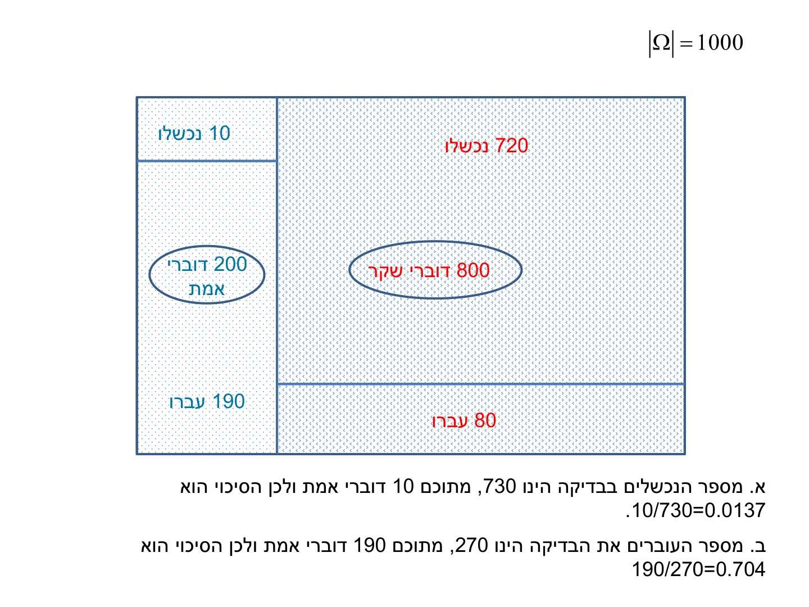

הסתברות מותנית, הסתברות שלמה ובייס
⏱ זמן משוער: 55 דק'
0. האינטואיציה — מה קורה כשיש לנו ידע מוקדם?
במודול הקודם חישבנו הסתברויות "מאפס": שרשרנו חוק כפל וחוק חיבור על מאורעות בלתי תלויים, בלי שום מידע נוסף. אבל בעולם האמיתי כמעט תמיד יש לנו ידע מוקדם: ידוע שהאדם שנבדק חולה, ידוע שהחשוד נכשל בפוליגרף, ידוע שהמוצר שנשלף פגום. השאלה משתנה מ"מה הסיכוי ש-X יקרה?" ל"מה הסיכוי ש-X קרה, בהינתן שאנחנו כבר יודעים ש-Y קרה?"
זו בדיוק הסתברות מותנית (Conditional Probability), והרעיון המרכזי שלה פשוט להפתיע: התנאי מצמצם את האוכלוסיה. ברגע שידוע שהאדם חולה, העולם הרלוונטי כבר איננו כל האוכלוסיה — אלא רק אוכלוסיית החולים, והיא הופכת ל"100% החדש". כל השאר — נוסחת ההסתברות השלמה, נוסחת בייס ושיטת עולם-1000 של התרגול — הן דרכים שונות לבצע את הצמצום הזה בצורה מסודרת.
מקור: lec03-04-probability-discrete-distributions.pdf (עמ' 9)
1. הסתברות מותנית — דוגמת האלכוהוליסטים
ההרצאה פותחת את הנושא ישר מדוגמה, וכדאי ללכת בעקבותיה כי כל המבנה של הנושא נמצא בה:
זו הסתברות מותנית, שכן ידוע התנאי שהאדם חולה. נבנה עץ הסתברויות — פיצול ראשון לפי אלכוהוליסט/לא, ופיצול שני לפי חולה/בריא. אלו ארבעת המסלולים (העלים) של העץ:
| מסלול | חישוב (חוק הכפל לאורך המסלול) |
|---|---|
| אלכוהוליסט (0.1) ← חולה (0.3) | 0.1·0.3 = 0.030 |
| אלכוהוליסט (0.1) ← בריא (0.7) | 0.1·0.7 = 0.070 |
| לא אלכוהוליסט (0.9) ← חולה (0.01) | 0.9·0.01 = 0.009 |
| לא אלכוהוליסט (0.9) ← בריא (0.99) | 0.9·0.99 = 0.891 |
(ביקורת: סכום ארבעת העלים הוא בדיוק 1 ✓.) כיוון שידוע כי האדם חולה, האוכלוסיה המתאימה היא רק אוכלוסיית החולים — שני המסלולים שמסתיימים ב"חולה":
0.1·0.3 + 0.9·0.01 = 0.039
לפיכך הערך 0.039 הוא "100% האוכלוסיה" החדש, והתשובה היא חלקם של האלכוהוליסטים החולים בתוכו:
0.030 / 0.039 ≈ 0.77
כלומר ההסתברות שחולה הכבד הוא אלכוהוליסט היא 0.77 — למרות שהאלכוהוליסטים הם רק 10% מהאוכלוסיה! התנאי "חולה כבד" שינה את התמונה לגמרי.
1.1 הנוסחה הפורמלית
במונחים סטטיסטיים נוהגים לרשום הסתברות מותנית בצורה:
P(A|B) = P(A∩B) / P(B)
- P(A|B) — ההסתברות ל-A בתנאי ש-B מתקיים.
- P(A∩B) — ההסתברות שגם A וגם B מתקיימים (בדוגמה: אלכוהוליסט חולה כבד — 0.030).
- P(B) — הסתברות התנאי (בדוגמה: חולה כבד — 0.039). זו האוכלוסיה המצומצמת שהתנאי מגדיר.
מקור: lec03-04-probability-discrete-distributions.pdf (עמ' 9-10)
2. עץ הסתברויות — בעיית המסעדות
עץ הסתברויות מורכב מצמתים שמהם מסתעפים נתיבים, ותנועה דרכם עוזרת לבנות את החישוב. שני כללי הברזל של המרצה:
הבעיה (מההרצאה): אדם נכנס באקראי לעיר שיש בה 2 מסעדות. הסיכוי לצאת מרוצה במסעדה A הוא 0.9 ובמסעדה B הוא 0.8. באין ידע מוקדם, האדם נכנס באקראי לאחת המסעדות (הסתברות 0.5). אם הוא מרוצה — ביום הבא ייכנס לאותה מסעדה; אם אינו מרוצה — ייכנס למחרת למסעדה האחרת, וכן הלאה. מה ההסתברות שביום השלישי ייכנס למסעדה A?
בונים עץ של שלושה ימים ומסמנים את המסלולים שמסתיימים ב-A ביום השלישי. ארבעה מסלולים כאלה:
| יום 1 | תוצאה | יום 2 | תוצאה | יום 3 | מכפלת המסלול |
|---|---|---|---|---|---|
| A (0.5) | מרוצה (0.9) | A | מרוצה (0.9) | A ✓ | 0.5·0.9·0.9 = 0.405 |
| A (0.5) | לא מרוצה (0.1) | B | לא מרוצה (0.2) | A ✓ | 0.5·0.1·0.2 = 0.010 |
| B (0.5) | מרוצה (0.8) | B | לא מרוצה (0.2) | A ✓ | 0.5·0.8·0.2 = 0.080 |
| B (0.5) | לא מרוצה (0.2) | A | מרוצה (0.9) | A ✓ | 0.5·0.2·0.9 = 0.090 |
0.5·0.9² + 0.5·0.1·0.2 + 0.5·0.8·0.2 + 0.5·0.2·0.9 = 0.585
תוצאה הגיונית — בשל היות מסעדה A טובה יותר, הסיכוי להימצא בה גדול יותר. ומה הסיכוי להיות ב-B ביום השלישי? אפשר לסכם את המסלולים המתאימים, או פשוט להשתמש במשלים: 1 − 0.585 = 0.415.
מקור: lec03-04-probability-discrete-distributions.pdf (עמ' 8-9)
3. הסתברות שלמה ובייס — השיטה הדו-שלבית
נסתכל שוב על מה שעשינו בדוגמת האלכוהוליסטים, כי זה בדיוק המתכון לכל שאלת בייס (Bayes) במבחן:
- שלב 1 — נוסחת ההסתברות השלמה (Total Probability): מחשבים את הסתברות התנאי כסכום כל המסלולים בעץ שמובילים אליו. בדוגמה: P(חולה) = מסלול האלכוהוליסטים החולים + מסלול הלא-אלכוהוליסטים החולים = 0.030 + 0.009 = 0.039.
- שלב 2 — היפוך ההתניה (בייס): מחלקים את המסלול המבוקש בסכום הזה — 0.030 / 0.039 ≈ 0.77.
בכתיב פורמלי, עבור מאורע A והמשלים שלו Ac:
P(B) = P(A)·P(B|A) + P(Ac)·P(B|Ac)
P(A|B) = P(A)·P(B|A) / P(B)
שימו לב לנקודה שחוזרת שוב ושוב במבחנים: ההתניה מתהפכת. הנתונים בשאלה הם תמיד בכיוון "קל" (P(חולה|אלכוהוליסט) = 0.3 — נתון ישירות), והשאלה היא בכיוון ההפוך (P(אלכוהוליסט|חולה)). העץ נותן לנו את כל המסלולים, וההסתברות השלמה בונה את המכנה.
מקור: lec03-04-probability-discrete-distributions.pdf (עמ' 9-10); class04.pptx
4. שיטת עולם-1000 — תרגיל הפוליגרף (תרגול 04)
המתרגל פותר שאלות בייס בשיטה גרפית שעוקפת את הנוסחה לגמרי, וזו השיטה המומלצת גם למבחן: עולם של 1000 איש. בוחרים אוכלוסיה דמיונית בגודל |Ω| = 1000, מפצלים אותה לפי הענפים למספרים שלמים של אנשים, והתשובה לכל שאלת התניה היא פשוט יחס בין ספירות. במקום שברים עשרוניים — סופרים אנשים.
התרגיל הבא הוא הפתרון המודפס היחיד בתרגול 04, ולכן הוא הדגמת-הזהב של השיטה:

נבנה את העולם צעד-צעד:
| קבוצה | גודל | עברו | נכשלו |
|---|---|---|---|
| דוברי אמת (20%) | 200 | 190 (95%) | 10 |
| דוברי שקר (80%) | 800 | 80 (10%) | 720 |
| סה"כ | 1000 | 270 | 730 |
א. מספר הנכשלים בבדיקה הינו 730, מתוכם 10 דוברי אמת ולכן הסיכוי הוא 10/730 = 0.0137.
ב. מספר העוברים את הבדיקה הינו 270, מתוכם 190 דוברי אמת ולכן הסיכוי הוא 190/270 = 0.704.
מקור: class04.pptx (עמ' 3-4)
5. דיאגרמות ון — חישוב הסתברויות דרך שטחים
דרך נוספת להיעזר בה לחישוב הסתברויות היא שרטוט שטחים — דיאגרמת ון (Venn Diagram). העיגול הגדול מהווה את כלל האוכלוסיה, ובתוכו שטחי המאורעות והחיתוך ביניהם. הנוסחה המרכזית:
P(A∪B) = P(A) + P(B) − P(A∩B)
הדוגמה מההרצאה: במדינה מסוימת 25% מהתושבים דוברים אנגלית, 70% דוברים צרפתית ו-15% דוברים גם אנגלית וגם צרפתית. מה ההסתברות שאדם אקראי יהיה:
| סעיף | דרישה | חישוב | תוצאה |
|---|---|---|---|
| א | דובר לפחות אחת מ-2 השפות | 0.7 + 0.25 − 0.15 | 0.80 |
| ב | דובר רק צרפתית | 0.7 − 0.15 | 0.55 |
| ג | דובר רק שפה אחת | 0.55 + (0.25 − 0.15) | 0.65 |
| ד | לא דובר אף אחת מהשפות | 1 − 0.8 (המשלים של סעיף א) | 0.20 |
שימו לב לדפוס: "לפחות אחת" = איחוד (ולא לשכוח להחסיר את החיתוך!); "רק צרפתית" = השטח של צרפתית פחות החיתוך; "אף אחת" = המשלים של האיחוד. אלה בדיוק הניסוחים שחוזרים בתרגילים ובחוברת.
מקור: lec03-04-probability-discrete-distributions.pdf (עמ' 10)
6. מלכודות למבחן
7. תרגילי הקורס
אלה תרגילי הבייס וההסתברות המותנית מתרגול 04 ומחוברת התרגילים — הדפוסים שמהם בנויה שאלת ההסתברות במבחן. לתרגילי החוברת יש פתרונות רשמיים; לתרגילי התרגול (שנפתרו בכיתה בלבד) מצורף פתרון שנכתב לאתר.
7.1 תרגול 04 — שאלה 1 (ויטמינים — דיאגרמת ון)
נתון כי 30% מהאוכלוסייה הבוגרת נוטלים ויטמינים בבוקר, 65% נוטלים ויטמינים בערב ו-20% נוטלים גם בבוקר וגם בערב. נבחר אדם באופן אקראי מן האוכלוסייה. מה ההסתברות שהוא: א. נוטל ויטמינים רק בבוקר? ב. נוטל ויטמינים רק פעם ביום? ג. נוטל ויטמינים לפחות פעם אחת ביום? ד. לא נוטל ויטמינים כלל?
פתרון שנכתב לאתר; במקור אין פתרון.
משרטטים דיאגרמת ון: בוקר 0.30, ערב 0.65, חיתוך 0.20.
א. רק בבוקר = בוקר פחות החיתוך: 0.30 − 0.20 = 0.10
ב. רק פעם ביום = רק בוקר או רק ערב: (0.30 − 0.20) + (0.65 − 0.20) = 0.10 + 0.45 = 0.55
ג. לפחות פעם ביום = האיחוד: 0.30 + 0.65 − 0.20 = 0.75
ד. כלל לא = המשלים של האיחוד: 1 − 0.75 = 0.25
7.2 תרגול 04 — שאלה 3 (אבק מצות — הסתברות שלמה ובייס)
בחג הפסח 60% מהאוכלוסייה נחשפים לאבק מצות (אלרגן). מתוכם 80% מפתחים גירוד. מתוך אלו שלא נחשפו לאבק מצות 20% מפתחים גירוד. א. מה ההסתברות לאדם בפסח לפתח גירוד? ב. מבין אלו שמתגרדים מה הסיכוי שהם נחשפו לאבק מצות? ג. מבין אלו שמתגרדים מה הסיכוי שהם לא נחשפו לאבק מצות?
פתרון שנכתב לאתר; במקור אין פתרון. נפתור בשיטת עולם-1000 של המתרגל.
עולם של 1000 איש: 600 נחשפו לאבק מצות — מהם 600·0.8 = 480 מתגרדים ו-120 לא; 400 לא נחשפו — מהם 400·0.2 = 80 מתגרדים ו-320 לא. סך המתגרדים: 480 + 80 = 560.
א. 560/1000 = 0.56 (ובנוסחה: 0.6·0.8 + 0.4·0.2 = 0.48 + 0.08 = 0.56)
ב. מבין 560 המתגרדים, 480 נחשפו: 480/560 ≈ 0.857
ג. המשלים: 80/560 ≈ 0.143 (ביקורת: 0.857 + 0.143 = 1 ✓)
7.3 תרגול 04 — תרגיל המפעל (לחץ דם — הסתברות שלמה ובייס)
במפעל תעשייתי גדול מבצעים בדיקות רפואיות שנתיות לכלל העובדים. בבדיקות התברר שמבין הפועלים המקצועיים — 20% סובלים מבעיות של לחץ דם, מבין הטכנאים — 30% סובלים מבעיות לחץ דם ומבין המנהלים — 40% סובלים מבעיות לחץ דם. ממחלקת משאבי אנוש נמסר שבמפעל 50% פועלים מקצועיים, 40% טכנאים ומהנדסים והיתר מנהלים. א. עובד מן המפעל נבחר באופן מקרי, מה ההסתברות שהוא סובל מבעיות לחץ דם? ב. עובד המפעל אושפז בשל בעיות לחץ דם, מה ההסתברות שמדובר באחד המנהלים? ג. עובד המפעל אושפז בשל בעיות לחץ דם, מה ההסתברות שאין מדובר באחד המנהלים?
פתרון שנכתב לאתר; במקור אין פתרון. שוב עולם-1000.
עולם של 1000 עובדים: 500 פועלים מקצועיים — מהם 500·0.2 = 100 עם לחץ דם; 400 טכנאים — מהם 400·0.3 = 120; 100 מנהלים — מהם 100·0.4 = 40. סך הסובלים מלחץ דם: 100 + 120 + 40 = 260.
א. 260/1000 = 0.26 (ובנוסחה: 0.5·0.2 + 0.4·0.3 + 0.1·0.4 = 0.26)
ב. מבין 260 המאושפזים, 40 מנהלים: 40/260 ≈ 0.154
ג. המשלים: 220/260 ≈ 0.846
7.4 חוברת — תרגיל מס' 4, שאלה 1 (עתונים — דיאגרמת ון)
במדינה מסוימת נתון: 25% מהתושבים קוראים עתון בוקר, 70% קוראים עתון ערב, 15% קוראים את 2 העתונים. בוחרים תושב באופן אקראי. מה ההסתברות? א. קורא לפחות אחד מהעתונים. ב. קורא רק עתון ערב. ג. קורא רק עתון אחד. ד. לא קורא עתונים כלל.
בדף התרגיל שבכתב היד אחוז קוראי שני העתונים נראה כ-10%; הפתרון הרשמי מחשב עם 15%, ולכן זה הערך המוצג כאן.
(בפתרון הרשמי — סרטוט דיאגרמת ון של שני העיגולים והחיתוך.)
א. 0.8 = 0.7 + 0.25 − 0.15
ב. 0.55 = 0.7 − 0.15
ג. 0.65 = (0.25 − 0.15) + (0.7 − 0.15)
ד. 0.2 = 1 − 0.8
7.5 חוברת — תרגיל מס' 4, שאלה 2 (ארבע מכונות — בייס לשני הכיוונים)
במפעל 4 מכונות. מכונה א' מיצרת 10% מכלל המוצרים ומתוכם 5% פגומים. מכונה ב' מיצרת 25% מהמוצרים מתוכם 4% פגומים. מכונה ג' מיצרת 30% מהמוצרים מתוכם 3% פגומים. מכונה ד' מיצרת את השאר מהם 2% פגומים. נבחר מוצר ונמצא שהוא פגום — מה ההסתברות שיוצר ע"י מכונה ג'? נבחר מוצר שנמצא שהוא תקין — מה ההסתברות שלא יוצר ע"י מכונה ג'?
עץ ההסתברויות (מהפתרון הרשמי): מכונה א' 0.1 ← פגום 0.05 / תקין 0.95; מכונה ב' 0.25 ← פגום 0.04 / תקין 0.96; מכונה ג' 0.3 ← פגום 0.03 / תקין 0.97; מכונה ד' 0.35 ← פגום 0.02 / תקין 0.98.
הסתברות לפגום (הסתברות שלמה):
0.1·0.05 + 0.25·0.04 + 0.3·0.03 + 0.35·0.02 = 0.031
ההסתברות לתקין: 0.969.
נבחר מוצר פגום — ההסתברות שיוצר ע"י מכונה ג':
(0.3·0.03) / 0.031 = 0.009 / 0.031 ≈ 0.29
נבחר מוצר תקין — ההסתברות שלא יוצר ע"י מכונה ג':
(0.1·0.95 + 0.25·0.96 + 0.35·0.98) / 0.969 = 0.678 / 0.969 ≈ 0.70
7.6 חוברת — תרגיל מס' 5, שאלה 1 (רכב או אוטובוס — הסתברות שלמה)
שמעון נוסע לעבודתו ברכבו הפרטי ב-8 ימים מכל 10 ובשאר באוטובוס. מנסיון העבר, ההסתברות שיגיע בזמן בנסיעה ברכב פרטי היא 0.8 ובאוטובוס 0.7. מה ההסתברות שיאחר ביום מסוים? מה ההסתברות שיגיע בזמן ביום מסוים?
ההסתברות לאחר — שני מסלולי האיחור מהעץ:
(8/10)·0.2 + (2/10)·0.3 = 0.22
וההסתברות להגיע בזמן — המשלים: 1 − 0.22 = 0.78.
7.7 חוברת — תרגיל מס' 5, שאלה 6 (מי אשם באיחור? — בייס)
כל אחד מהגורמים הבאים יכול לגרום לאיחור: השעון המעורר התקלקל בהסתברות 0.01, אי התעוררות מצלצול השעון 0.1, התרחשות פקקי תנועה 0.1. בהנחה של אי תלות בין הסיבות, מה ההסתברות להגיע בזמן? אם משה איחר, מה ההסתברות ששעונו המעורר התקלקל?
ההסתברות לאיחור (בפתרון הרשמי — חיבור שלוש הסיבות):
0.1 + 0.1 + 0.01 = 0.21
ולכן ההסתברות להגיע בזמן: 0.79.
משה מאחר — ההסתברות שהאיחור בגלל השעון המעורר:
P(A|B) = 0.01 / 0.21 ≈ 0.05
הפתרון הרשמי מחבר את שלוש ההסתברויות ישירות (0.21) — קירוב נוח כאן כי החפיפות בין הסיבות זעירות; חישוב מדויק דרך המשלים של "כל הגורמים תקינים" נותן 1 − 0.99·0.9·0.9 ≈ 0.198.
7.8 חוברת — תרגיל מס' 5, שאלה 2 (משלימים בדיאגרמת ון)
A ו-B הן 2 מאורעות במרחב מדגם Ω. נתון: P(A) = 0.4, P(B) = 0.25, P(A∩B) = 0.15. מצא את P(Ac∩Bc) ואת P(Ac∪Bc) (Ac, Bc הם המשלימים של A ושל B).
(בפתרון הרשמי — סרטוט ון: החיתוך 0.15, יתרת A ו-B בתוך העיגולים, ומחוץ לשניהם 0.5.)
המשלימים: P(Ac) = 0.6, P(Bc) = 0.75.
מחוץ לשני העיגולים: P(Ac∩Bc) = 0.5 (המשלים של האיחוד P(A∪B) = 0.4 + 0.25 − 0.15 = 0.5).
איחוד המשלימים — כל השטח פרט לחיתוך:
P(Ac∪Bc) = 0.5 + 0.1 + 0.25 = 0.85
מקור: class04.pptx; חוברת התרגילים — תרגילים 4-5 + חוברת הפתרונות
8. בדיקה עצמית
מהי נוסחת ההסתברות המותנית P(A|B), כפי שנרשמה בהרצאה?
אילו שני כללים חלים על עץ הסתברויות, לפי ההרצאה?
בדוגמת האלכוהוליסטים חושב הערך 0.039. מה הוא מייצג, ולמה דווקא בו מחלקים?
בתרגיל הפוליגרף — בהינתן שחשוד נכשל במבחן, מה הסיכוי שהוא דובר אמת (לפי הפתרון הרשמי)?
מהי שיטת "עולם-1000" שבה המתרגל פותר שאלות בייס?
בדוגמת השפות מההרצאה (25% אנגלית, 70% צרפתית, 15% שתיהן) — מה ההסתברות שאדם אקראי דובר לפחות אחת מהשפות?
בתרגיל המכונות מהחוברת נבחר מוצר ונמצא שהוא פגום. מה ההסתברות שיוצר ע"י מכונה ג' (המייצרת 30% מהמוצרים, 3% מהם פגומים)?
שמעון נוסע ברכב פרטי 8 מתוך 10 ימים (מגיע בזמן בהסתברות 0.8) ובאוטובוס בשאר הימים (בזמן בהסתברות 0.7). מה ההסתברות שיאחר ביום מסוים?
סיימתם את הפרק? סמנו אותו כהושלם: